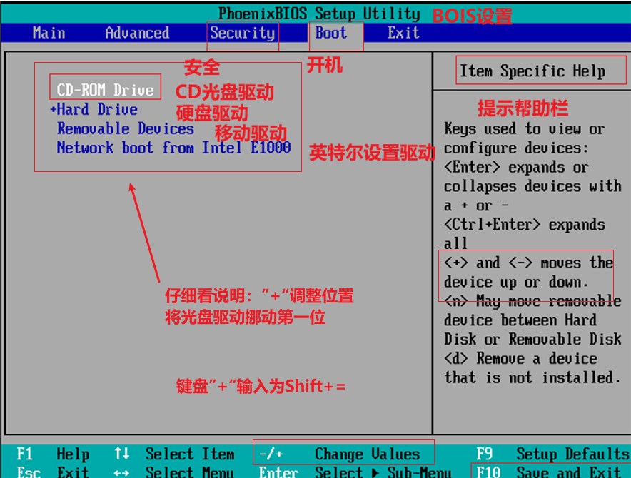
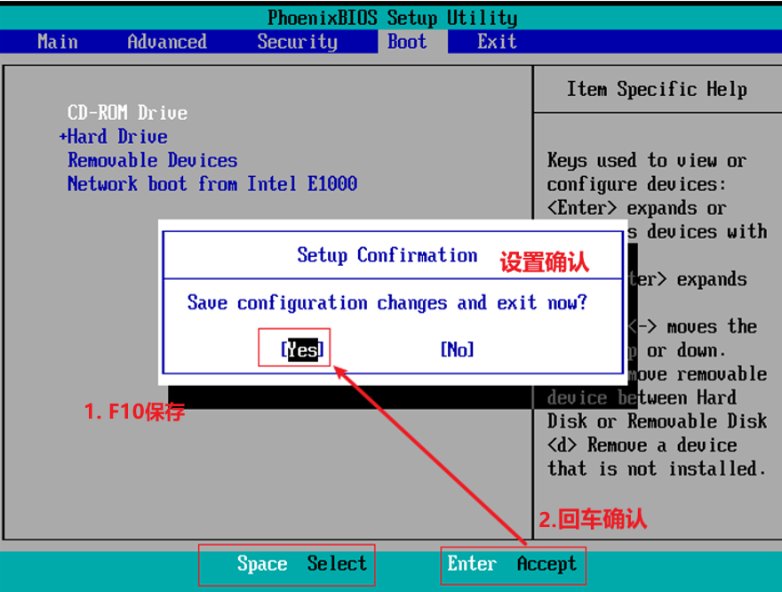
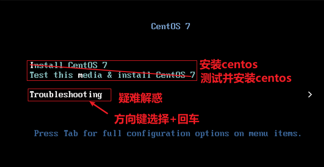
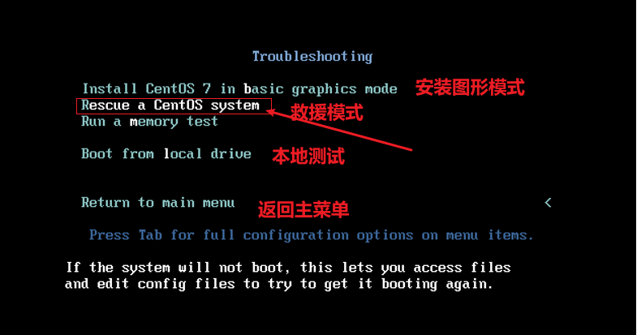
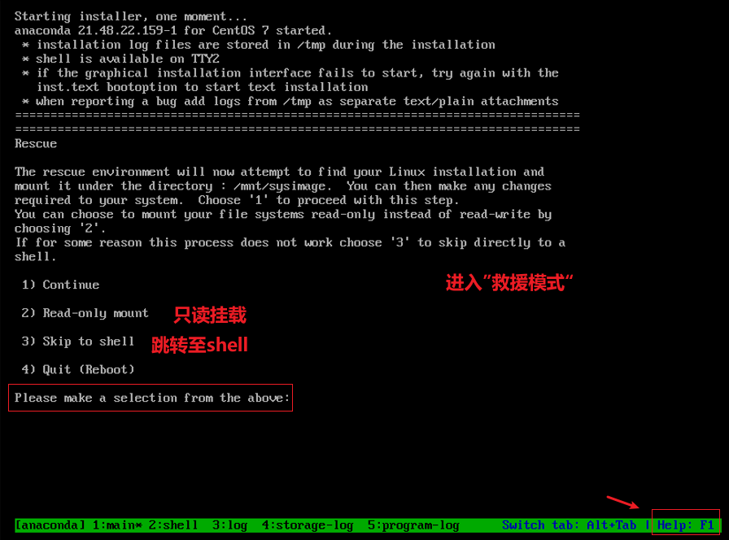

CentOS7如何优雅的开启救援模式
💊 CentOS 7 如何优雅的开启救援模式
废话一则：如果你不是拼单身多年的手速在centos开机的0.5秒内精准的按下Esc键，或许，我们可以换一个更加优雅从容的方式，如果，你也是第一次开启救援模式。
那我们开始吧!
- 进入VM虚拟机，在centos的日常开启的电源键，点击“打开电源时进入固件”，如下图所示：

- 随后在centos打开“Phoenix BIOS Setup Unility”中点击“Boot”，将光盘驱动移动至第顺一位，具体如下图所示：

- F10保存，选择“Yes”，如下图所示

- 选择“Troubleshooting”疑难杂症，如下图所示：

- 选择“Rescue a CentOS system”,如下图所示

- 如果以上操作正确，便可进入救援模式，如下图所示：

至此，CentOS 7进入救援模式便顺利完成。
本博客所有文章除特别声明外，均采用 CC BY-SA 4.0 协议 ，转载请注明出处！